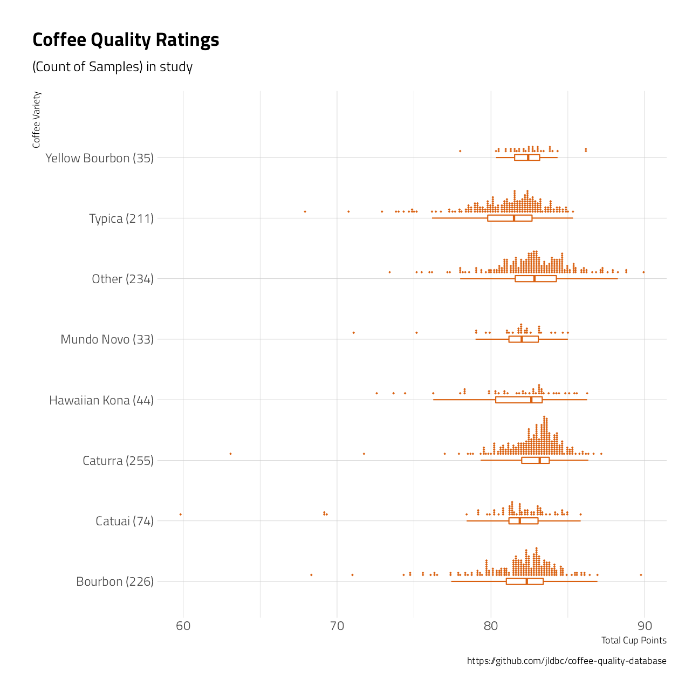
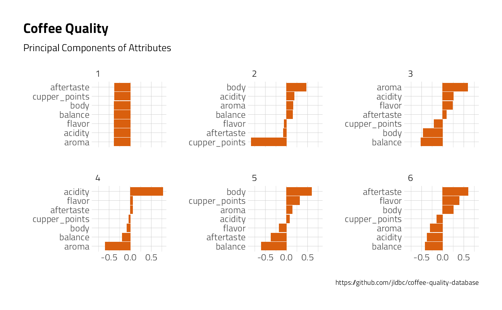

Last updated: 2021-09-22
Checks: 7 0
Knit directory: myTidyTuesday/
This reproducible R Markdown analysis was created with workflowr (version 1.6.2). The Checks tab describes the reproducibility checks that were applied when the results were created. The Past versions tab lists the development history.
Great! Since the R Markdown file has been committed to the Git repository, you know the exact version of the code that produced these results.
Great job! The global environment was empty. Objects defined in the global environment can affect the analysis in your R Markdown file in unknown ways. For reproduciblity it’s best to always run the code in an empty environment.
The command set.seed(20210907) was run prior to running the code in the R Markdown file. Setting a seed ensures that any results that rely on randomness, e.g. subsampling or permutations, are reproducible.
Great job! Recording the operating system, R version, and package versions is critical for reproducibility.
Nice! There were no cached chunks for this analysis, so you can be confident that you successfully produced the results during this run.
Great job! Using relative paths to the files within your workflowr project makes it easier to run your code on other machines.
Great! You are using Git for version control. Tracking code development and connecting the code version to the results is critical for reproducibility.
The results in this page were generated with repository version 3a67e41. See the Past versions tab to see a history of the changes made to the R Markdown and HTML files.
Note that you need to be careful to ensure that all relevant files for the analysis have been committed to Git prior to generating the results (you can use wflow_publish or wflow_git_commit). workflowr only checks the R Markdown file, but you know if there are other scripts or data files that it depends on. Below is the status of the Git repository when the results were generated:
Ignored files:
Ignored: .Rhistory
Ignored: .Rproj.user/
Ignored: catboost_info/
Ignored: data/2021-09-08/
Ignored: data/acs_poverty.rds
Ignored: data/fmhpi.rds
Ignored: data/grainstocks.rds
Ignored: data/hike_data.rds
Ignored: data/us_states.rds
Ignored: data/us_states_hexgrid.geojson
Ignored: data/weatherstats_toronto_daily.csv
Untracked files:
Untracked: code/work list batch targets.R
Untracked: figure/
Note that any generated files, e.g. HTML, png, CSS, etc., are not included in this status report because it is ok for generated content to have uncommitted changes.
These are the previous versions of the repository in which changes were made to the R Markdown (analysis/Coffee.Rmd) and HTML (docs/Coffee.html) files. If you’ve configured a remote Git repository (see ?wflow_git_remote), click on the hyperlinks in the table below to view the files as they were in that past version.
| File | Version | Author | Date | Message |
|---|---|---|---|---|
| Rmd | 3a67e41 | opus1993 | 2021-09-22 | migrate to ggdist stat_dots |
coffee <- tidytuesdayR::tt_load("2020-07-07")
Downloading file 1 of 1: `coffee_ratings.csv`coffee_ratings <- coffee$coffee_ratings %>%
mutate(
coffee_id = row_number(),
country_of_origin = case_when(
stringr::str_detect(country_of_origin, "Tanzania") ~ "Tanzania",
stringr::str_detect(country_of_origin, "Hawaii") ~ "US Hawaii", TRUE ~ country_of_origin
)
) %>%
filter(total_cup_points > 0)Let’s build a helper function to add sample counts to categorical charts.
withfreq <- function(x) {
tibble(x) %>%
add_count(x) %>%
mutate(combined = glue::glue("{ str_sub(x, end = 18) } ({ n })")) %>%
pull(combined)
}Cedric Scherer offers great advice on conveying distributions with boxplots and dots here.
coffee_ratings %>%
count(species, sort = TRUE) %>%
knitr::kable()| species | n |
|---|---|
| Arabica | 1310 |
| Robusta | 28 |
coffee_lumped <- coffee_ratings %>%
filter(!is.na(variety)) %>%
mutate(variety = fct_lump(variety, 8), sort = TRUE)
coffee_lumped %>%
mutate(variety = withfreq(fct_reorder(variety, total_cup_points))) %>%
ggplot(aes(total_cup_points, variety)) +
geom_boxplot(
color = "#d95f0e",
width = 0.1,
outlier.shape = NA
) +
ggdist::stat_dots(
## orientation to the left
side = "top",
## move geom up
justification = -0.1,
## adjust grouping (binning) of observations
binwidth = .125,
color = "#d95f0e"
) +
labs(
title = "Coffee Quality Ratings",
subtitle = "(Count of Samples) in study",
caption = "https://github.com/jldbc/coffee-quality-database",
x = "Total Cup Points",
y = "Coffee Variety"
)
coffee_ratings %>%
filter(!is.na(color)) %>%
count(color, sort = TRUE) %>%
knitr::kable(caption = "Count of Coffee Samples by")| color | n |
|---|---|
| Green | 869 |
| Bluish-Green | 114 |
| Blue-Green | 85 |
| None | 52 |
coffee_ratings %>%
filter(!is.na(country_of_origin)) %>%
mutate(
country = withfreq(fct_lump(country_of_origin, 12)),
country = fct_reorder(country, total_cup_points)
) %>%
ggplot(aes(total_cup_points, country)) +
geom_boxplot(
color = "#d95f0e",
width = 0.1,
outlier.shape = NA
) +
ggdist::stat_dots(
## orientation to the left
side = "top",
## move geom up
justification = -0.1,
## adjust grouping (binning) of observations
binwidth = .125,
color = "#d95f0e"
) +
labs(
title = "Coffee Quality Ratings by Country of Origin",
subtitle = "(Count of Samples) in study",
caption = "https://github.com/jldbc/coffee-quality-database",
x = "Total Cup Points",
y = NULL
)coffee_metrics <- coffee_ratings %>%
dplyr::select(
coffee_id, total_cup_points, variety, company,
country_of_origin,
altitude_mean_meters,
aroma:moisture
) %>%
pivot_longer(aroma:cupper_points, names_to = "metric", values_to = "value")
coffee_metrics %>%
mutate(metric = fct_reorder(metric, value)) %>%
ggplot(aes(value, metric)) +
geom_boxplot(
width = .15,
outlier.shape = NA,
color = "#d95f0e"
) +
geom_point(
## draw horizontal lines instead of points
shape = 124,
size = 4,
alpha = .1,
color = "#d95f0e"
) +
scale_x_continuous(limits = c(5, 10.2)) +
labs(
title = "Coffee Quality Ratings Attribute Ranges",
caption = "https://github.com/jldbc/coffee-quality-database",
x = "Score",
y = ""
)correlations <- coffee_metrics %>%
pairwise_cor(metric, coffee_id, value, sort = TRUE)
correlations %>%
head(50) %>%
graph_from_data_frame() %>%
ggraph() +
geom_edge_link(aes(edge_alpha = correlation), show.legend = FALSE) +
geom_node_point() +
geom_node_text(aes(label = name), repel = TRUE) +
labs(
title = "Coffee Quality",
subtitle = "Network Diagram of Attribute Correlation",
caption = "https://github.com/jldbc/coffee-quality-database",
x = "",
y = ""
)coffee_metrics %>%
filter(!metric %in% c("sweetness", "clean_cup", "uniformity")) %>%
group_by(metric) %>%
mutate(centered = value - mean(value)) %>%
ungroup() %>%
widely_svd(metric, coffee_id, value) %>%
filter(between(dimension, 1, 6)) %>%
mutate(metric = reorder_within(metric, value, dimension)) %>%
ggplot(aes(value, metric)) +
geom_col(fill = "#d95f0e") +
scale_y_reordered() +
facet_wrap(~dimension, scales = "free_y") +
theme(plot.title.position = "plot") +
labs(
title = "Coffee Quality",
subtitle = "Principal Components of Attributes",
caption = "https://github.com/jldbc/coffee-quality-database",
x = "",
y = ""
)
coffee_ratings %>%
filter(
altitude_mean_meters < 10000,
altitude != 1
) %>%
mutate(altitude_mean_meters = pmin(altitude_mean_meters, 3500)) %>%
ggplot(aes(altitude_mean_meters, total_cup_points)) +
geom_point(color = "#d95f0e", alpha = 0.3) +
geom_smooth(
method = "lm",
formula = "y ~ x"
) +
theme(plot.title.position = "plot") +
labs(
title = "Coffee Quality at Altitude",
caption = "https://github.com/jldbc/coffee-quality-database",
x = "Altitude (meters)",
y = "Total Cup Points"
)coffee_metrics %>%
filter(altitude_mean_meters < 10000) %>%
mutate(altitude_mean_meters = pmin(altitude_mean_meters, 3000)) %>%
mutate(km = altitude_mean_meters / 1000) %>%
group_by(metric) %>%
summarize(
correlation = cor(altitude_mean_meters, value),
model = list(lm(value ~ km))
) %>%
mutate(tidied = map(model, broom::tidy, conf.int = TRUE)) %>%
unnest(tidied) %>%
filter(term == "km") %>%
ungroup() %>%
mutate(metric = fct_reorder(metric, estimate)) %>%
ggplot(aes(estimate, metric, color = p.value < .05)) +
geom_point() +
geom_errorbarh(aes(xmin = conf.low, xmax = conf.high), height = .1) +
theme(
legend.position = "top",
legend.spacing.x = unit(6, "mm"),
panel.grid.major.y = element_blank()
) +
labs(
title = "Coffee Quality",
y = "Evaluation of coffee",
x = "Each kilometer of altitude contributes\n this much to attribute scores (95% confidence interval)",
caption = "https://github.com/jldbc/coffee-quality-database"
)coffee_lumped %>%
mutate(country_of_origin = fct_lump_lowfreq(country_of_origin, 8)) %>%
group_by(country_of_origin, variety) %>%
summarise(
score = mean(total_cup_points),
.groups = "drop"
) %>%
ungroup() %>%
filter(!variety %in% c("Other", "Yellow Bourbon")) %>%
mutate(country_of_origin = reorder_within(country_of_origin, score, variety)) %>%
ggplot() +
geom_col(aes(
x = score,
y = country_of_origin,
fill = ggplot2::cut_width(score, 2)
), show.legend = FALSE) +
scale_fill_brewer(type = "seq", palette = "YlOrBr") +
scale_y_reordered() +
labs(
title = "Mean Coffee Quality Total Cup Points",
y = "", x = "Variety",
caption = "#TidyTuesday 2020-07-07 @Jim_Gruman\n https://github.com/jldbc/coffee-quality-database"
) +
facet_wrap(~variety, scales = "free_y")My Tidytuesday tweet:
tweetrmd::include_tweet("https://twitter.com/jim_gruman/status/1280690395752644608")#TidyTuesday üìä#dataviz on ‚òïÔ∏è Coffee bean ratings by variety and country. Quick take: Ethiopian varieties score very well. #Rstats Code here: https://t.co/R6c8XaMm0I pic.twitter.com/JmsL0FjV15
— Jim Grumanüìöüöµ‚Äç‚ôÇÔ∏è‚öô (@jim_gruman) July 8, 2020
sessionInfo()R version 4.1.1 (2021-08-10)
Platform: x86_64-w64-mingw32/x64 (64-bit)
Running under: Windows 10 x64 (build 19043)
Matrix products: default
locale:
[1] LC_COLLATE=English_United States.1252
[2] LC_CTYPE=English_United States.1252
[3] LC_MONETARY=English_United States.1252
[4] LC_NUMERIC=C
[5] LC_TIME=English_United States.1252
attached base packages:
[1] stats graphics grDevices utils datasets methods base
other attached packages:
[1] tidytext_0.3.1 igraph_1.2.6 ggraph_2.0.5 widyr_0.1.4
[5] ggridges_0.5.3 forcats_0.5.1 stringr_1.4.0 dplyr_1.0.7
[9] purrr_0.3.4 readr_2.0.1 tidyr_1.1.3 tibble_3.1.4
[13] ggplot2_3.3.5 tidyverse_1.3.1 workflowr_1.6.2
loaded via a namespace (and not attached):
[1] readxl_1.3.1 backports_1.2.1 systemfonts_1.0.2
[4] workflows_0.2.3 selectr_0.4-2 plyr_1.8.6
[7] tidytuesdayR_1.0.1 splines_4.1.1 listenv_0.8.0
[10] SnowballC_0.7.0 usethis_2.0.1 digest_0.6.27
[13] foreach_1.5.1 htmltools_0.5.2 yardstick_0.0.8
[16] viridis_0.6.1 parsnip_0.1.7.900 fansi_0.5.0
[19] magrittr_2.0.1 tune_0.1.6 tzdb_0.1.2
[22] recipes_0.1.16 globals_0.14.0 graphlayouts_0.7.1
[25] modelr_0.1.8 gower_0.2.2 extrafont_0.17
[28] vroom_1.5.5 R.utils_2.10.1 extrafontdb_1.0
[31] hardhat_0.1.6 rsample_0.1.0 dials_0.0.10
[34] colorspace_2.0-2 rvest_1.0.1 ggrepel_0.9.1
[37] ggdist_3.0.0 textshaping_0.3.5 haven_2.4.3
[40] xfun_0.26 crayon_1.4.1 jsonlite_1.7.2
[43] survival_3.2-11 iterators_1.0.13 glue_1.4.2
[46] polyclip_1.10-0 gtable_0.3.0 ipred_0.9-12
[49] distributional_0.2.2 R.cache_0.15.0 tweetrmd_0.0.9
[52] Rttf2pt1_1.3.9 future.apply_1.8.1 scales_1.1.1
[55] infer_1.0.0 DBI_1.1.1 Rcpp_1.0.7
[58] viridisLite_0.4.0 bit_4.0.4 GPfit_1.0-8
[61] lava_1.6.10 prodlim_2019.11.13 httr_1.4.2
[64] RColorBrewer_1.1-2 ellipsis_0.3.2 R.methodsS3_1.8.1
[67] pkgconfig_2.0.3 farver_2.1.0 nnet_7.3-16
[70] sass_0.4.0 dbplyr_2.1.1 utf8_1.2.2
[73] here_1.0.1 reshape2_1.4.4 labeling_0.4.2
[76] tidyselect_1.1.1 rlang_0.4.11 DiceDesign_1.9
[79] later_1.3.0 cachem_1.0.6 munsell_0.5.0
[82] cellranger_1.1.0 tools_4.1.1 cli_3.0.1
[85] generics_0.1.0 broom_0.7.9 evaluate_0.14
[88] fastmap_1.1.0 ragg_1.1.3 yaml_2.2.1
[91] rematch2_2.1.2 bit64_4.0.5 knitr_1.34
[94] fs_1.5.0 tidygraph_1.2.0 nlme_3.1-152
[97] future_1.22.1 whisker_0.4 R.oo_1.24.0
[100] xml2_1.3.2 tokenizers_0.2.1 compiler_4.1.1
[103] rstudioapi_0.13 curl_4.3.2 reprex_2.0.1
[106] lhs_1.1.3 tweenr_1.0.2 bslib_0.3.0
[109] stringi_1.7.4 highr_0.9 gdtools_0.2.3
[112] hrbrthemes_0.8.0 lattice_0.20-44 Matrix_1.3-4
[115] styler_1.6.1 conflicted_1.0.4 vctrs_0.3.8
[118] tidymodels_0.1.3 pillar_1.6.2 lifecycle_1.0.0
[121] furrr_0.2.3 jquerylib_0.1.4 httpuv_1.6.3
[124] R6_2.5.1 promises_1.2.0.1 gridExtra_2.3
[127] janeaustenr_0.1.5 parallelly_1.28.1 codetools_0.2-18
[130] MASS_7.3-54 assertthat_0.2.1 rprojroot_2.0.2
[133] withr_2.4.2 mgcv_1.8-36 parallel_4.1.1
[136] hms_1.1.0 grid_4.1.1 rpart_4.1-15
[139] timeDate_3043.102 class_7.3-19 rmarkdown_2.11
[142] git2r_0.28.0 ggforce_0.3.3 pROC_1.18.0
[145] lubridate_1.7.10